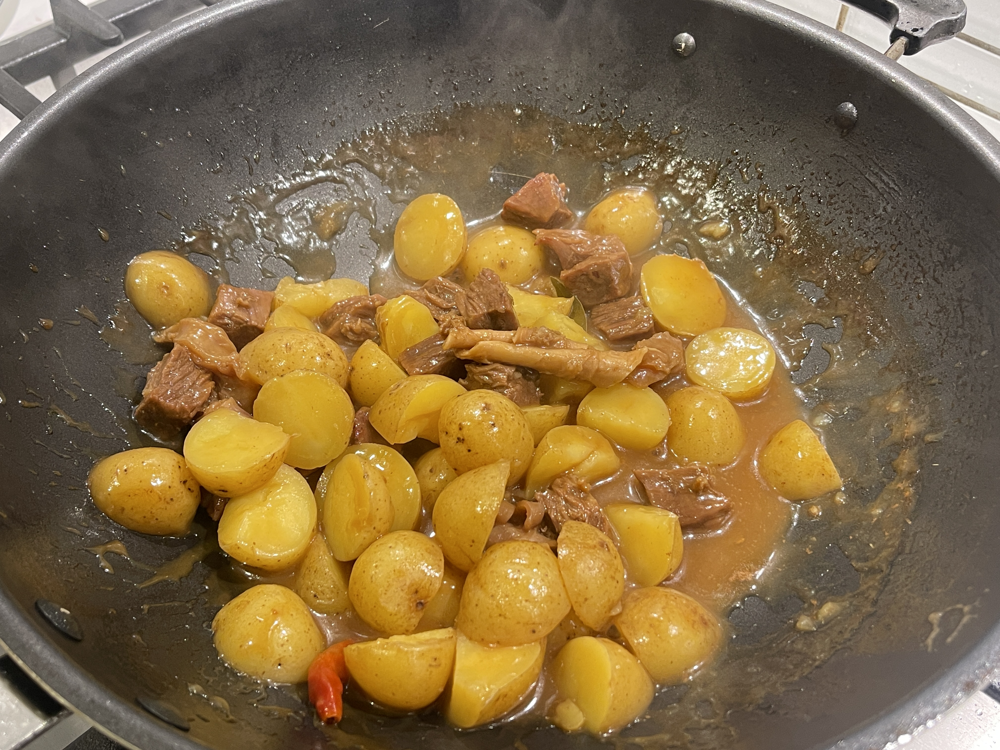
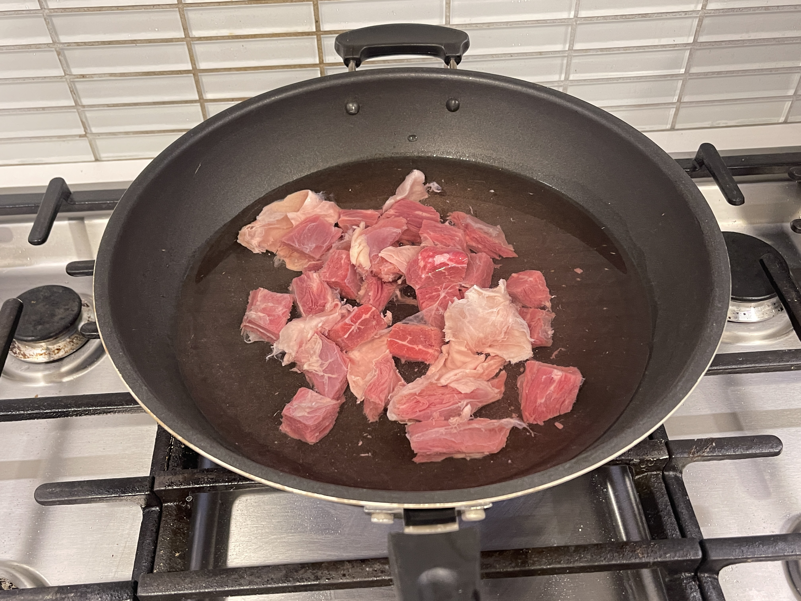
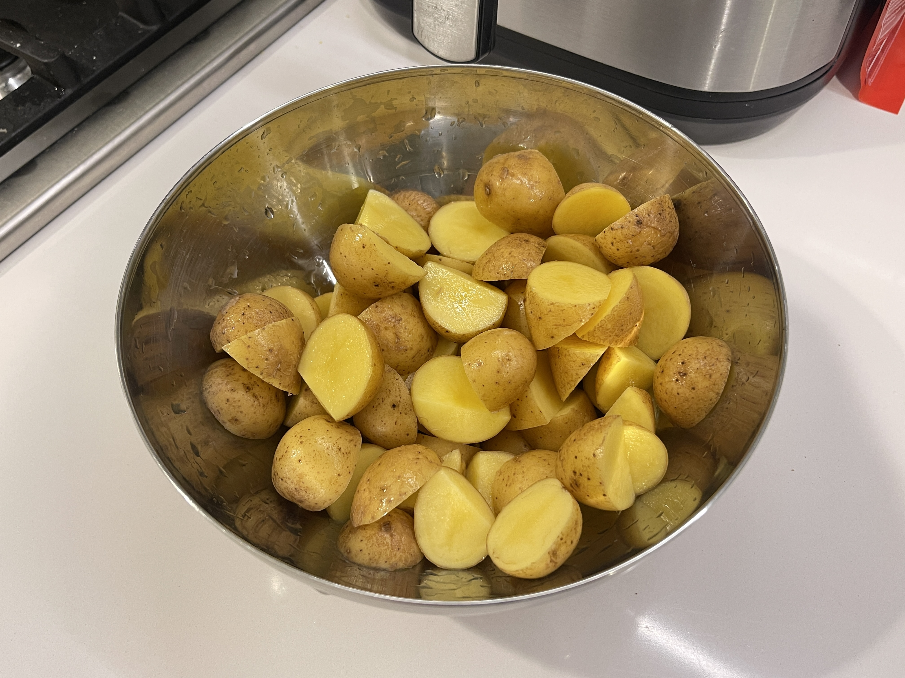
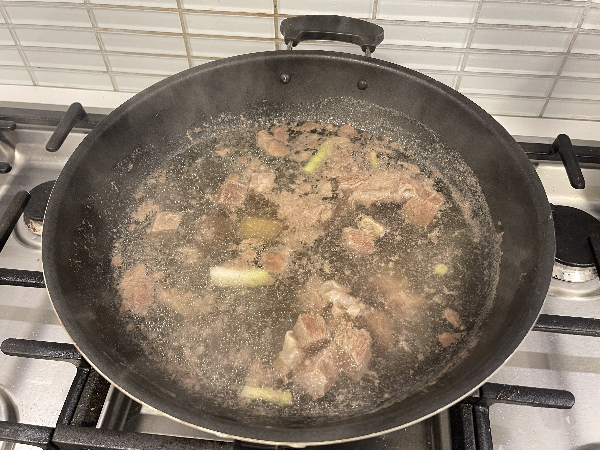
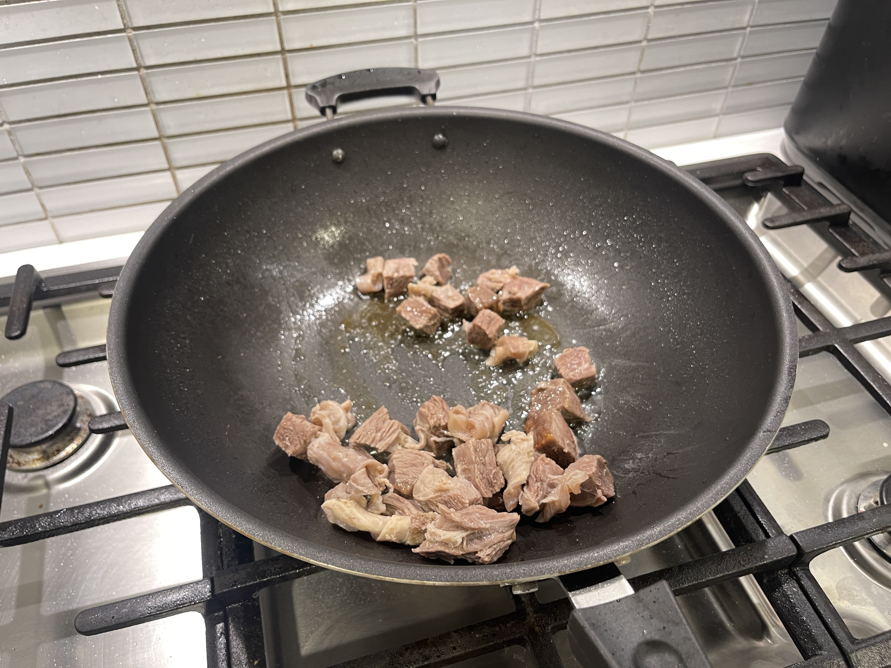
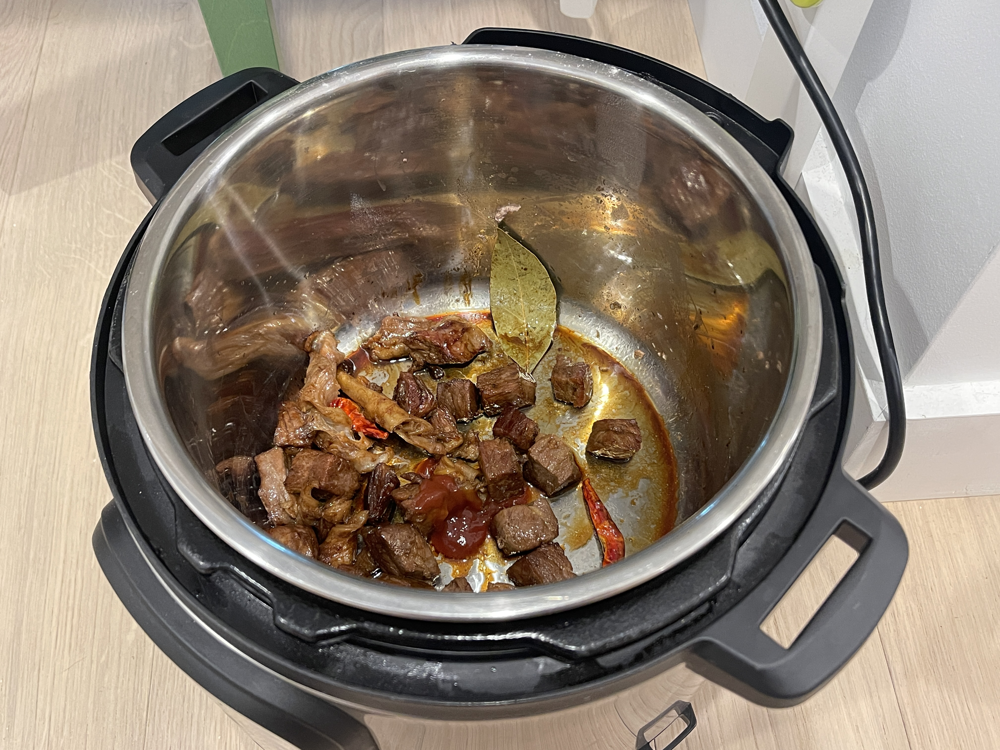
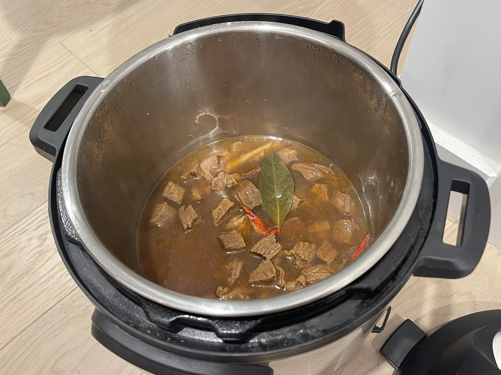
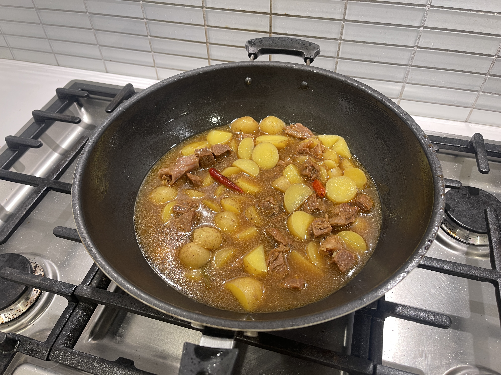
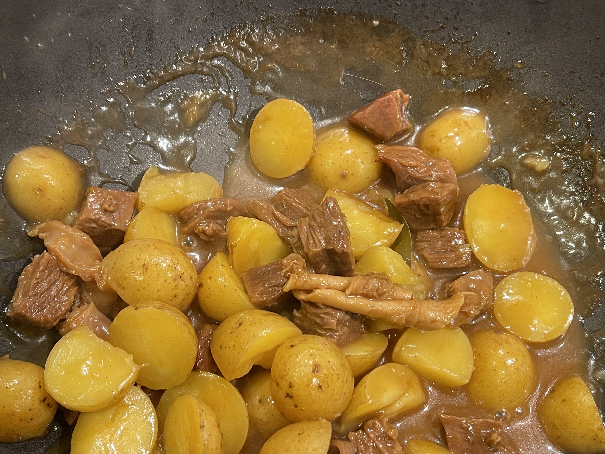

INGREDIENTS
Beef brisket, potatoes, scallions, ginger, allspice, dried chili peppers, rock sugar, cooking wine, soy sauce
and oyster sauce, tomato sauce, starch.
Braised Beef with Potatoes
Pressure cooker version
土豆炖牛腩
THIS DISH IS RECOMMENDED BY YIRAN LAN
Yiran told me that Braised Beef with Potatoes (土豆炖牛肉), to be precise, originated from Hungary, which is
a famous Hungarian dish, and since then it has been introduced to the former Soviet Union, which has become a
model of the so-called "communist" life, and it has also entered into the homes of ordinary people in China,
which has become one of our Chinese homemade dishes. It has also entered the homes of ordinary Chinese people
and become one of our Chinese home cooking. This is the first time I heard this story.

STEP 1: Cut beef brisket into pieces and put into cold water, add green onion and ginger.

STEP 2: Wash the potatoes, cut into pieces. (it is best to peel the skin)

STEP 3: Fish out the blanched brisket.

STEP 4: Add oil to a pan and add rock sugar over low heat. When the sugar melts, add the brisket.

STEP 5: Pour the brisket into the pressure cooker, add soy sauce, sesame seeds, dried chili,
and tomato sauce.

STEP 6: Add boiling water and select stew mode for 30 minutes.

STEP 7: Pour the meat and stock from the pressure cooker into a new pot and add the potatoes.

STEP 8: Pour in a bowl of starchy water, cover the pot and simmer until the soup thickens.
(2023.11.10)